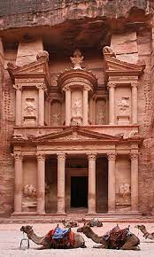

petra

Petra significa “excavada en piedra” en griego. En efecto, esta ciudad ubicada en un angosto valle, está literalmente tallada en la roca. Petra, o Raqmu, como la llamaban los nabateos, sus segundos pobladores, es uno de esos enclaves que dejan sin palabras cuando se visita por primera vez